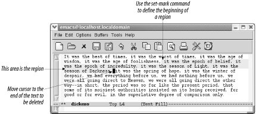
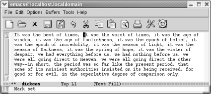
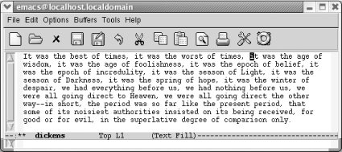
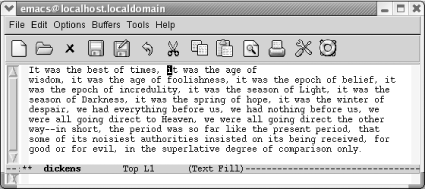

{% include JB/setup %}
{% raw %}
<div>
<div class="book" xml:lang="en"><div class="book"><div class="book"><div class="book"><h1 class="title"><a id="gnu3-CHP-2-SECT-3" class="calibre1"></a>Marking Text to Delete, Move, or Copy</h1></div></div></div><p class="copyright">What if the text you want to <a id="gnu3-CHP-2-ITERM-1714" class="calibre2"></a>
            <a id="gnu3-CHP-2-ITERM-1715" class="calibre2"></a>
            <a id="gnu3-CHP-2-ITERM-1716" class="calibre2"></a>
            <a id="gnu3-CHP-2-ITERM-1717" class="calibre2"></a>
            <a id="gnu3-CHP-2-ITERM-1718" class="calibre2"></a>delete is just a phrase? Or
half a paragraph? Or several paragraphs? In Emacs, you select
<a id="gnu3-CHP-2-ITERM-1719" class="calibre2"></a>
            <a id="gnu3-CHP-2-ITERM-1720" class="calibre2"></a>text
by defining an area called a <span><em class="calibre7">region</em></span>. You can
mark regions with the mouse or by using the keyboard. What happens
with the mouse is a bit complicated, so we describe it later in this
chapter, following our discussion of the system clipboard.</p><p class="copyright">To define a region using the keyboard, you use
<a id="gnu3-CHP-2-ITERM-1721" class="calibre2"></a>
            <a id="gnu3-CHP-2-ITERM-1722" class="calibre2"></a>
            <a id="gnu3-CHP-2-ITERM-1723" class="calibre2"></a>a
secondary pointer called a <span><em class="calibre7">mark</em></span>. Some versions
of Emacs display the mark on the screen; unfortunately, in GNU Emacs,
the mark is invisible.</p><p class="copyright">You set the mark at one end of the region by pressing <span><strong class="calibre5">C-Space</strong></span> or
<span><strong class="calibre5">C-@</strong></span>, then move the cursor to the other
<a id="gnu3-CHP-2-ITERM-1724" class="calibre2"></a>end of the region. (The cursor
is sometimes also referred to as <span><em class="calibre7">point</em></span>. There is
one minor but important difference between the cursor and the point,
however. The cursor is on top of a character; in Emacs, the point is
actually in between the character the cursor is on and the previous
character. As we said, this difference is minor, but it helps you to
visualize where the cursor should be when you mark a region.) <a class="calibre2" href="ch02s03.html#gnu3-CHP-2-FIG-5" title="Figure 2-5. Point, mark, and region">Figure 2-5</a> illustrates point, mark, and region.</p><div class="figure"><a id="gnu3-CHP-2-FIG-5" class="calibre2"></a><div class="figure-contents"><div class="mediaobject"><a id="I_2_tt42" class="calibre2"></a></div></div><p class="title3"><b class="calibre25">Figure 2-5. Point, mark, and region</b></p></div><br class="book"/><p class="copyright">Let's mark a sample region. In this example, we
remove the phrase "it was the worst of
times." First, we find the beginning of the phrase.
Then we set the mark, move forward to the end of the phrase, and cut.</p><div class="book"><a id="ch02-8-fm2xml" class="calibre2"></a><table class="calibre8"><colgroup class="calibre9"><col class="calibre10"/></colgroup><tbody class="calibre15"><tr class="calibre12"><td class="calibre17">
                        <p class="copyright">Move to the beginning of "it" and
press <span><strong class="calibre5">C-Space</strong></span>.</p>
                     </td></tr><tr class="calibre12"><td class="calibre17">
                        <p class="copyright">
                           </p><div class="book"><div class="mediaobject"><a id="I_2_tt43" class="calibre2"></a></div></div><p class="copyright">
                        </p>
                     </td></tr><tr class="calibre12"><td class="calibre19">
                        <p class="copyright">Set the mark; <span><strong class="calibre5">Mark set</strong></span> appears in
the minibuffer.</p>
                     </td></tr></tbody></table></div><p class="copyright">Move to the "i" in
"it was the age of wisdom." Because
the point is really just before the
"i," this placement will be just
right.</p><div class="book"><a id="ch02-9-fm2xml" class="calibre2"></a><table class="calibre8"><colgroup class="calibre9"><col class="calibre10"/></colgroup><tbody class="calibre15"><tr class="calibre12"><td class="calibre17">
                        <p class="copyright">Move to the "i" in
"it was the age of wisdom"</p>
                     </td></tr><tr class="calibre12"><td class="calibre17">
                        <p class="copyright">
                           </p><div class="book"><div class="mediaobject"><a id="I_2_tt44" class="calibre2"></a></div></div><p class="copyright">
                        </p>
                     </td></tr><tr class="calibre12"><td class="calibre19">
                        <p class="copyright">The point is at the end of the region to be marked.</p>
                     </td></tr></tbody></table></div><p class="copyright">Now the region is marked. If the region is not highlighted,
you'll want to make sure it is marked correctly
before giving the delete command. Press <span><strong class="calibre5">C-x
C-x</strong></span> (for <span><strong class="calibre5">exchange-point-and-mark</strong></span>); this command swaps
the locations of the mark and the point. If the cursor moves to where
you thought the mark was, the region is marked correctly. Especially
because you can't see the mark,
it's a good habit to check its location using
<span><strong class="calibre5">C-x C-x</strong></span> before deleting a region.
People who have used Emacs for years still forget to set the mark and
then make a deletion without knowing what they've
just deleted. (The undo command, bound to <span><strong class="calibre5">C-_</strong></span> and <span><strong class="calibre5">C-x
u</strong></span>, comes in handy in such a case.)</p><p class="copyright">To cut the region,
<a id="gnu3-CHP-2-ITERM-1725" class="calibre2"></a>
            <a id="gnu3-CHP-2-ITERM-1726" class="calibre2"></a>press
<span><strong class="calibre5">C-w</strong></span> (for <span><strong class="calibre5">kill-region</strong></span>). (The scissors icon on the
toolbar also works.)</p><div class="book"><a id="ch02-10-fm2xml" class="calibre2"></a><table class="calibre8"><colgroup class="calibre9"><col class="calibre10"/></colgroup><tbody class="calibre15"><tr class="calibre12"><td class="calibre17">
                        <p class="copyright">Press: <span><strong class="calibre5">C-w</strong></span>
                        </p>
                     </td></tr><tr class="calibre12"><td class="calibre17">
                        <p class="copyright">
                           </p><div class="book"><div class="mediaobject"><a id="I_2_tt45" class="calibre2"></a></div></div><p class="copyright">
                        </p>
                     </td></tr><tr class="calibre12"><td class="calibre19">
                        <p class="copyright">
                           <span><strong class="calibre5">C-w</strong></span> cuts the region.</p>
                     </td></tr></tbody></table></div><p class="copyright">If you're not sure of what you
<a id="gnu3-CHP-2-ITERM-1727" class="calibre2"></a>
            <a id="gnu3-CHP-2-ITERM-1728" class="calibre2"></a>deleted,
just press <span><strong class="calibre5">C-_</strong></span> to undo it. The text
is still marked, and you can delete it again with <span><strong class="calibre5">C-w</strong></span> if you want to. To move text, mark it,
press <span><strong class="calibre5">C-w</strong></span> to cut the region, then
move the cursor to the place you want to insert the text, and press
<span><strong class="calibre5">C-y</strong></span>. If you yank the text back into
the wrong location, just type <span><strong class="calibre5">C-_</strong></span> to
undo it, then move to the place you really wanted to put the text,
and press <span><strong class="calibre5">C-y</strong></span> again.</p><p class="copyright">When you're defining a region, you normally set the
mark at one end and then move the cursor to the other end of the
region. A few shortcuts are helpful in some of the most common
situations. To mark a <a id="gnu3-CHP-2-ITERM-1729" class="calibre2"></a>
            <a id="gnu3-CHP-2-ITERM-1730" class="calibre2"></a>
            <a id="gnu3-CHP-2-ITERM-1731" class="calibre2"></a>paragraph,
press <span><strong class="calibre5">M-h</strong></span>. This sets the mark at the
end of the paragraph and places the cursor at the beginning
automatically. Similarly, <span><strong class="calibre5">C-x h</strong></span> (for
<span><strong class="calibre5">mark-whole-buffer</strong></span>) marks the entire
buffer; the cursor goes to the beginning, and the mark is placed at
the end. Finally, <span><strong class="calibre5">C-x C-p</strong></span> marks the
current page, with <span><em class="calibre7">pages</em></span> being defined by the
<span><strong class="calibre5">C-l</strong></span> character if you are in text
mode. Of course, marking a paragraph, page, or buffer is usually only
the prelude to some other operation, like killing (<span><strong class="calibre5">C-w</strong></span>).</p><div class="book" xml:lang="en"><div class="book"><div class="book"><div class="book"><h2 class="title1"><a id="gnu3-CHP-2-SECT-3.1" class="calibre1"></a>Copying Text</h2></div></div></div><p class="copyright">To copy text, mark a <a id="gnu3-CHP-2-ITERM-1732" class="calibre2"></a>
               <a id="gnu3-CHP-2-ITERM-1733" class="calibre2"></a>region,
then press <span><strong class="calibre5">M-w</strong></span> (for <span><strong class="calibre5">kill-ring-save</strong></span>; the toolbar icon with two
pieces of paper also runs this command). Move the cursor to the place
where you want to insert the copied text and press <span><strong class="calibre5">C-y</strong></span>. Copying text is exactly the same as
killing it, except that Emacs doesn't delete
anything. The text you have copied is placed in the kill ring, so you
can use <span><strong class="calibre5">C-y</strong></span> to access it as often as
you like.</p><p class="copyright">One advantage to <span><strong class="calibre5">M-w</strong></span> is that it
works on read-only files and buffers. For example, if you wanted to
create a file of Emacs hints, you could use <span><strong class="calibre5">M-w</strong></span> to copy some text from online help into
one of your buffers.</p><p class="copyright">Here are the steps for some common deletion tasks.</p><p class="copyright">To mark a
<a id="gnu3-CHP-2-ITERM-1734" class="calibre2"></a>
               <a id="gnu3-CHP-2-ITERM-1735" class="calibre2"></a>
               <a id="gnu3-CHP-2-ITERM-1736" class="calibre2"></a>
               <a id="gnu3-CHP-2-ITERM-1737" class="calibre2"></a>region:</p><div class="book"><ol class="orderedlist"><li class="listitem"><p class="copyright">Move the cursor to the beginning of the area you want to delete.</p></li><li class="listitem"><p class="copyright">Press <span><strong class="calibre5">C-Space</strong></span>. Emacs displays the
message <span><strong class="calibre5">Mark set</strong></span>.</p></li><li class="listitem"><p class="copyright">Move the cursor to the end of the region you want to delete.</p></li></ol></div><p class="copyright">To delete
a<a id="gnu3-CHP-2-ITERM-1738" class="calibre2"></a>
               <a id="gnu3-CHP-2-ITERM-1739" class="calibre2"></a>
               <a id="gnu3-CHP-2-ITERM-1740" class="calibre2"></a>
               <a id="gnu3-CHP-2-ITERM-1741" class="calibre2"></a>
region:</p><div class="book"><ol class="orderedlist"><li class="listitem"><p class="copyright">Mark the region to be deleted.</p></li><li class="listitem"><p class="copyright">Press <span><strong class="calibre5">C-w</strong></span> to delete the region.</p></li></ol></div><p class="copyright">To move
<a id="gnu3-CHP-2-ITERM-1742" class="calibre2"></a>
               <a id="gnu3-CHP-2-ITERM-1743" class="calibre2"></a>text:</p><div class="book"><ol class="orderedlist"><li class="listitem"><p class="copyright">Delete the text you want to move using the procedures for marking and
deleting a region.</p></li><li class="listitem"><p class="copyright">Move the cursor where you want to insert the text.</p></li><li class="listitem"><p class="copyright">Press <span><strong class="calibre5">C-y</strong></span>. Emacs inserts the text
you deleted.</p></li></ol></div><p class="copyright">To copy
<a id="gnu3-CHP-2-ITERM-1744" class="calibre2"></a>
               <a id="gnu3-CHP-2-ITERM-1745" class="calibre2"></a>text:</p><div class="book"><ol class="orderedlist"><li class="listitem"><p class="copyright">Mark the region you want to copy.</p></li><li class="listitem"><p class="copyright">Press <span><strong class="calibre5">M-w</strong></span> to copy the text.</p></li><li class="listitem"><p class="copyright">Move the cursor where you want to insert the copied text and press
<span><strong class="calibre5">C-y</strong></span>. Emacs inserts the text you
copied.</p></li></ol></div></div><div class="book" xml:lang="en"><div class="book"><div class="book"><div class="book"><h2 class="title1"><a id="gnu3-CHP-2-SECT-3.2" class="calibre1"></a>Recovering Earlier Deletions</h2></div></div></div><p class="copyright">Earlier we mentioned
<a id="gnu3-CHP-2-ITERM-1746" class="calibre2"></a>
               <a id="gnu3-CHP-2-ITERM-1747" class="calibre2"></a>
               <a id="gnu3-CHP-2-ITERM-1748" class="calibre2"></a>the kill ring, a temporary storage
area in which Emacs saves the stuff you delete. So far,
we've assumed that you're
interested in resurrecting what you've most recently
killed. However, the kill ring does a lot more. It actually stores
your last 30 deletions. We've seen that <span><strong class="calibre5">C-y</strong></span> restores the text you deleted most
recently. Typing <span><strong class="calibre5">M-y</strong></span> deletes the
text you just yanked and gets the next most recent text from the kill
ring.</p><p class="copyright">Here's how it works. In <a class="calibre2" href="ch02s03.html#gnu3-CHP-2-TABLE-4" title="Table 2-4. The kill ring in action">Table 2-4</a>, assume that you've just
killed the words "most recent."
<span><strong class="calibre5">C-y</strong></span> retrieves these words from the
kill ring. When you press <span><strong class="calibre5">M-y</strong></span>, Emacs
gets rid of "most recent" and gets
the next <a id="gnu3-CHP-2-ITERM-1749" class="calibre2"></a>entry from the kill ring
("second-last").</p><div class="book"><a id="gnu3-CHP-2-TABLE-4" class="calibre2"></a><p class="title2"><b class="calibre25">Table 2-4. The kill ring in action</b></p><div class="table-contents"><table summary="The kill ring in action" class="calibre8"><colgroup class="calibre9"><col class="calibre10"/><col class="calibre10"/></colgroup><thead class="calibre11"><tr class="calibre12"><th class="calibre26">
                           <p class="copyright">Keystrokes</p>
                        </th><th class="calibre27">
                           <p class="copyright">Action</p>
                        </th></tr></thead><tbody class="calibre15"><tr class="calibre12"><td class="calibre28">
                           <p class="copyright">
                              <span><strong class="calibre5">C-y</strong></span>
                           </p>
                        </td><td class="calibre29">
                           <a id="I_2_tt46" class="calibre2"></a><pre class="programlisting">                              <span><strong class="calibre5">This was the most recent</strong></span> 
                              <span><strong class="calibre5">deletion</strong></span>.</pre>
                        </td></tr><tr class="calibre12"><td class="calibre28">
                           <p class="copyright">
                              <span><strong class="calibre5">M-y</strong></span>
                           </p>
                        </td><td class="calibre29">
                           <a id="I_2_tt47" class="calibre2"></a><pre class="programlisting">                              <span><strong class="calibre5">This was the second-last</strong></span> 
                              <span><strong class="calibre5">deletion</strong></span>.</pre>
                        </td></tr><tr class="calibre12"><td class="calibre28">
                           <p class="copyright">
                              <span><strong class="calibre5">M-y</strong></span>
                           </p>
                        </td><td class="calibre29">
                           <a id="I_2_tt48" class="calibre2"></a><pre class="programlisting">                              <span><strong class="calibre5">This was the third-last</strong></span> 
                              <span><strong class="calibre5">deletion</strong></span>.</pre>
                        </td></tr><tr class="calibre12"><td class="calibre30">
                           <p class="copyright">
                              <span><strong class="calibre5">M-y</strong></span>
                           </p>
                        </td><td class="calibre31">
                           <a id="I_2_tt49" class="calibre2"></a><pre class="programlisting">                              <span><strong class="calibre5">This was the fourth-last</strong></span> 
                              <span><strong class="calibre5">deletion</strong></span>.</pre>
                        </td></tr></tbody></table></div></div><br class="book"/><p class="copyright">You can keep on typing <span><strong class="calibre5">M-y</strong></span>,
retrieving successively more ancient deletions, until you reach the
end of the kill ring (at which point it cycles back to the most
recently killed text; that's why
it's called a <span><em class="calibre7">ring</em></span>).</p><p class="copyright">Thirty deletions by default is a nice size—far more generous
than most programs offer. But you can enlarge or reduce the size of
the kill ring if you wish, using a variable called <span><strong class="calibre5">kill-ring-max</strong></span>. To experiment, give the
command: <span><strong class="calibre5">M-x set-variable Enter kill-ring-max
Enter</strong></span> 
               <span><em class="calibre7">new-value</em></span> 
               <span><strong class="calibre5">Enter</strong></span> (where <span><em class="calibre7">new-value</em></span> is
a number).</p></div><div class="book" xml:lang="en"><div class="book"><div class="book"><div class="book"><h2 class="title1"><a id="gnu3-CHP-2-SECT-3.3" class="calibre1"></a>Selecting and Pasting</h2></div></div></div><p class="copyright">Using the menus, you can access
<a id="gnu3-CHP-2-ITERM-1750" class="calibre2"></a>
               <a id="gnu3-CHP-2-ITERM-1751" class="calibre2"></a>
               <a id="gnu3-CHP-2-ITERM-1752" class="calibre2"></a>
               <a id="gnu3-CHP-2-ITERM-1753" class="calibre2"></a>text from the kill ring in a more
straightforward way: by choosing Edit<span>→</span> Select and Paste. A
menu showing deletions appears, with the most recent ones on top. To
show you as many deletions as possible, each line in the window
represents a separate deletion. So if you've killed
a large region, say 500 lines, you see only the beginning of the
first line of that deletion, ellipses, and the end of the deletion.
Your selection is pasted into the buffer at the cursor position.</p><p class="copyright">
               <a class="calibre2" href="ch02s03.html#gnu3-CHP-2-TABLE-5" title="Table 2-5. Commands for working with regions">Table 2-5</a> summarizes commands
<a id="gnu3-CHP-2-ITERM-1754" class="calibre2"></a>
               <a id="gnu3-CHP-2-ITERM-1755" class="calibre2"></a>for working with regions.</p><div class="book"><a id="gnu3-CHP-2-TABLE-5" class="calibre2"></a><p class="title2"><b class="calibre25">Table 2-5. Commands for working with regions</b></p><div class="table-contents"><table summary="Commands for working with regions" class="calibre8"><colgroup class="calibre9"><col class="calibre10"/><col class="calibre10"/><col class="calibre10"/></colgroup><thead class="calibre11"><tr class="calibre12"><th class="calibre26">
                           <p class="copyright">Keystrokes</p>
                        </th><th class="calibre26">
                           <p class="copyright">Command name</p>
                        </th><th class="calibre27">
                           <p class="copyright">Action</p>
                        </th></tr></thead><tbody class="calibre15"><tr class="calibre12"><td class="calibre28">
                           <p class="copyright">
                              <span><strong class="calibre5">C-@</strong></span> or <span><strong class="calibre5">C-
Space</strong></span>
                           </p>
                        </td><td class="calibre28">
                           <p class="copyright">
                              <span><strong class="calibre5">set-mark-command</strong></span>
                           </p>
                        </td><td class="calibre29">
                           <p class="copyright">Mark the beginning (or end) of a region.</p>
                        </td></tr><tr class="calibre12"><td class="calibre28">
                           <p class="copyright">
                              <span><strong class="calibre5">C-x C-x</strong></span>
                           </p>
                        </td><td class="calibre28">
                           <p class="copyright">
                              <span><strong class="calibre5">exchange-point-and-mark</strong></span>
                           </p>
                        </td><td class="calibre29">
                           <p class="copyright">Exchange location of cursor and mark.</p>
                        </td></tr><tr class="calibre12"><td class="calibre28">
                           <p class="copyright">
                              <span><strong class="calibre5">C-w</strong></span>
                           </p>
                        </td><td class="calibre28">
                           <p class="copyright">
                              <span><strong class="calibre5">kill-region</strong></span>
                           </p>
                        </td><td class="calibre29">
                           <p class="copyright">Delete the region.</p>
                        </td></tr><tr class="calibre12"><td class="calibre28">
                           <p class="copyright">
                              <span><strong class="calibre5">C-y</strong></span>
                           </p>
                        </td><td class="calibre28">
                           <p class="copyright">
                              <span><strong class="calibre5">yank</strong></span>
                           </p>
                        </td><td class="calibre29">
                           <p class="copyright">Paste most recently killed or copied text.</p>
                        </td></tr><tr class="calibre12"><td class="calibre28">
                           <p class="copyright">
                              <span><strong class="calibre5">M-w</strong></span>
                           </p>
                        </td><td class="calibre28">
                           <p class="copyright">
                              <span><strong class="calibre5">kill-ring-save</strong></span>
                           </p>
                        </td><td class="calibre29">
                           <p class="copyright">Copy the region (so it can be pasted with <span><strong class="calibre5">C-y</strong></span>).</p>
                        </td></tr><tr class="calibre12"><td class="calibre28">
                           <p class="copyright">
                              <span><strong class="calibre5">M-h</strong></span>
                           </p>
                        </td><td class="calibre28">
                           <p class="copyright">
                              <span><strong class="calibre5">mark-paragraph</strong></span>
                           </p>
                        </td><td class="calibre29">
                           <p class="copyright">Mark paragraph.</p>
                        </td></tr><tr class="calibre12"><td class="calibre28">
                           <p class="copyright">
                              <span><strong class="calibre5">C-x C-p</strong></span>
                           </p>
                        </td><td class="calibre28">
                           <p class="copyright">
                              <span><strong class="calibre5">mark-page</strong></span>
                           </p>
                        </td><td class="calibre29">
                           <p class="copyright">Mark page.</p>
                        </td></tr><tr class="calibre12"><td class="calibre28">
                           <p class="copyright">
                              <span><strong class="calibre5">C-x h</strong></span>
                           </p>
                        </td><td class="calibre28">
                           <p class="copyright">
                              <span><strong class="calibre5">mark-whole-buffer</strong></span>
                           </p>
                        </td><td class="calibre29">
                           <p class="copyright">Mark buffer.</p>
                        </td></tr><tr class="calibre12"><td class="calibre30">
                           <p class="copyright">
                              <span><strong class="calibre5">M-y</strong></span>
                           </p>
                        </td><td class="calibre30">
                           <p class="copyright">
                              <span><strong class="calibre5">yank-pop</strong></span>
                           </p>
                        </td><td class="calibre31">
                           <p class="copyright">After <span><strong class="calibre5">C-y</strong></span>, pastes earlier deletion.</p>
                        </td></tr></tbody></table></div></div><br class="book"/></div></div></div>

{% endraw %}

